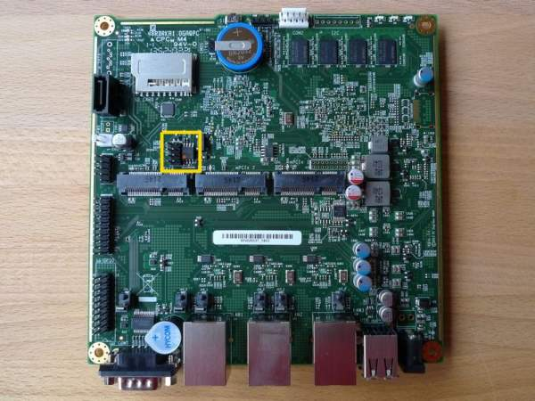
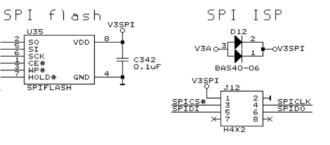

PC Engines APU1
This page describes how to run coreboot on PC Engines APU1 platform.
Technology
CPU |
AMD G series T40E APU |
CPU core |
1 GHz dual core (Bobcat core) with 64 bit support 32K data + 32K instruction + 512KB L2 cache per core |
DRAM |
2 or 4 GB DDR3-1066 DRAM |
Boot |
From SD card, USB, mSATA, SATA |
Power |
6 to 12W of 12V power |
Firmware |
coreboot with support for iPXE and USB boot |
Flashing coreboot
Type |
Value |
|---|---|
Socketed flash |
no |
Model |
MX25L1606E |
Size |
2 MiB |
Package |
SOP-8 |
Write protection |
jumper on WP# pin |
Dual BIOS feature |
no |
Internal flashing |
yes |
Internal programming
The SPI flash can be accessed using flashrom. It is important to execute
command with a -c <chipname> argument:
flashrom -p internal -c "MX25L1606E" -w coreboot.rom
External programming
IMPORTANT: When programming SPI flash, first you need to enter apu1 in S5 (Soft-off) power state. S5 state can be forced by shorting power button pin on J2 header.
The external access to flash chip is available through standard SOP-8 clip or SOP-8 header next to the flash chip on the board. Notice that not all boards have a header soldered down originally. Hence, there could be an empty slot with 8 eyelets, so you can solder down a header on your own. The SPI flash chip and SPI header are marked in the picture below. Also there is SPI header pin layout included. Notice, that signatures at the schematic can be ambiguous:
J12 SPIDI = U35 SO = MISO
J12 SPIDO = U35 SI = MOSI
There is no restrictions as to the programmer device. It is only recommended to flash firmware without supplying power. External programming can be performed, for example using OrangePi and Armbian. You can exploit linux_spi driver which provide communication with SPI devices. Example command to program SPI flash with OrangePi using linux_spi:
flashrom -w coreboot.rom -p linux_spi:dev=/dev/spidev1.0,spispeed=16000 -c
"MX25L1606E"
apu1 platform with marked in SPI header and SPI flash chip

SPI header pin layout

Schematics
PC Engines APU platform schematics are available for free on PC Engines official site. Depending on the configuration: apu1c and apu1d.